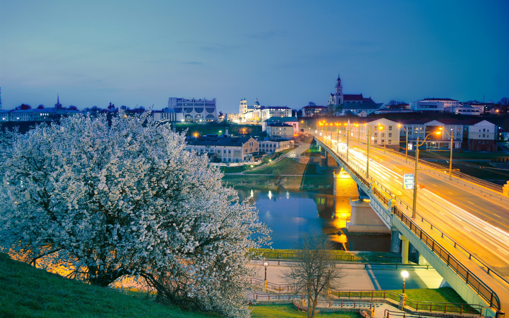
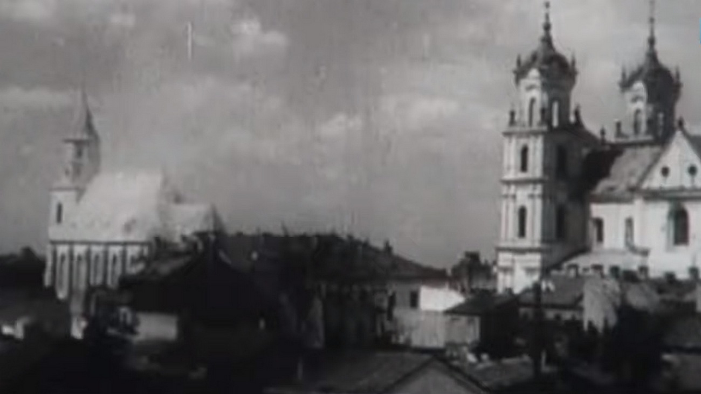

Область образована 20 сентября 1944 года. Площадь ее составляет 25,1 тыс. км., население 1 млн. 184 тыс. человек. Центр области – г. Гродно (население 309 тыс. человек). В составе области 17 районов, 194 сельских Советов, 12 городов, в том числе 6 областного подчинения, 21 поселок городского типа. Здесь проживает 11,7% населения страны. Область включает в себя 17 районов: Берестовицкий, Волковысский, Вороновский, Гродненский, Дятловский, Зельвенский, Ивьевский, Кореличский, Лидский, Мостовский, Новогрудский, Островецкий, Ошмянский, Свислочский, Слонимский, Сморгонский, Щучинский. Лесами занята треть территории области. Здесь находится часть Национального парка Беловежская пуща, 10 природных заказников республиканского значения, 50 памятников природы. Имеется разветвлённая речная сеть. Река Неман – третья по величине река в Беларуси. Область образована 20 сентября 1944 года. Площадь ее составляет 25,1 тыс. км., население 1 млн. 
История Гродненщины
История Гродненщины начинается с седой древности. Ее территория была заселена людьми с позднего палеолита. Во второй половине I-го тысячелетия территория колонизирована славянскими племенами. В XII – первой половине ХIV века существовали Гродненское, Новогрудское и Волковысское княжества. Более двух столетий они были форпостом борьбы с агрессией крестоносцев. С образованием Великого Княжества Литовского, Русского и Жемойтского его первой столицей стал город Новогрудок. В замке Крево, что в Сморгонском районе, заключена Кревская уния 1385 года, положившая начало объединению Великого Княжества Литовского и Польши. После второго и третьего разделов Речи Посполитой в 1793 и 1795 годах территория современной Гродненской области вошла в состав Российской империи. Значительным событием в ее истории стал 1801 год, когда была образована Гродненская губерния, вскоре ставшая одной из наиболее экономически развитых в государстве. Жители Гродненщины принимали активное участие в восстаниях под руководством Тадеуша Костюшко и Кастуся Калиновского, революционных выступлениях в 1917 году. Земли Принеманского края по условиям Рижского мирного договора в 1921 году отошли к Польскому государству. В сентябре 1939 года Гродненщина вошла в состав БССР. 